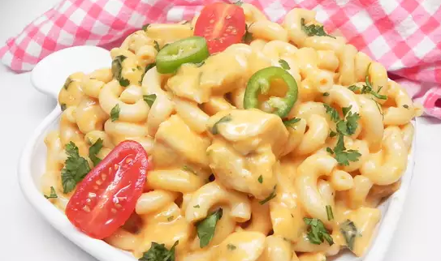

Best-Ever Cucumber Dill Salad

Description:
Have some leftover chicken that you don't know what to do with? Transform
it into a cheesy and comforting one-pot dinner sensation. Garnish with
your favorite enchilada toppings if desired.
Ingredients:
- 16 ounces elbow macaroni
- 1 (10 ounce) can red enchilada sauce
- 1 cup half-and-half
- 1 (4 ounce) can chopped green chilies
- 2 cups shredded sharp Cheddar cheese
- 2 cups shredded pepperjack cheese
- 2 cups cubed cooked chicken
- ¼ cup chopped cilantro
Steps:
-
Bring a large pot of lightly salted water to a boil. Cook elbow macaroni
in the boiling water, stirring occasionally, until tender yet firm to
the bite, about 8 minutes. Drain and set aside.
-
Combine enchilada sauce, half-and-half, and green chiles in the same pot
over medium heat and cook until warm, 5 to 10 minutes. Slowly add
Cheddar cheese and pepperjack cheese and whisk continuously until
melted, about 5 minutes. Return cooked macaroni to the pot. Add chicken
and cilantro and stir until combined and heated through, about 5 minutes
more.
Back to from page